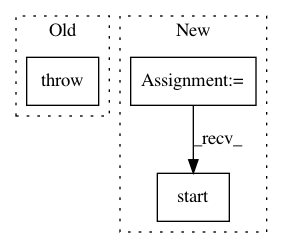

634c2049b8f95c45495811197346964e0826df2e,src/graph_transpiler/webdnn/backend/interface/generator.py,,generate_descriptor,#Any#Any#,81
Before Change
graph = copy.deepcopy(graph)
except RecursionError:
// Occurs when the graph has many nodes (e.g. ResNet)
raise RecursionError("Recursion error occurred when copying graph." +
" sys.setrecursionlimit(10000) may help fixing it.")
// some optimize rule work even when OPTIMIZE=0
graph, _ = GeneralOptimizeRule().optimize(graph)
After Change
import threading
sys.setrecursionlimit(16384)
threading.stack_size(64 * 1024 * 1024)
t = threading.Thread(target=worker)
t.start()
t.join()
if len(error) > 0:
raise error[0]
return result[0]
In pattern: SUPERPATTERN
Frequency: 3
Non-data size: 3
Instances
Project Name: mil-tokyo/webdnn
Commit Name: 634c2049b8f95c45495811197346964e0826df2e
Time: 2018-11-18
Author: hidaka@mi.t.u-tokyo.ac.jp
File Name: src/graph_transpiler/webdnn/backend/interface/generator.py
Class Name:
Method Name: generate_descriptor
Project Name: vatlab/SoS
Commit Name: c89c51e1861a47703840368c0210b8dd9e115dcc
Time: 2020-12-21
Author: ben.bog@gmail.com
File Name: src/sos/__main__.py
Class Name:
Method Name: cmd_run
Project Name: erikbern/ann-benchmarks
Commit Name: 845a5692cd16a152572e8818dbdecfd5d7a7764a
Time: 2017-12-09
Author: mail@erikbern.com
File Name: ann_benchmarks/runner.py
Class Name:
Method Name: run_docker